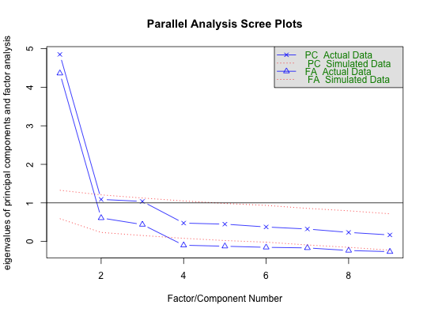

One way to determine the number of factors or components in a data matrix or a correlation matrix is to examine the ``scree" plot of the successive eigenvalues. Sharp breaks in the plot suggest the appropriate number of components or factors to extract. ``Parallel" analyis is an alternative technique that compares the scree of factors of the observed data with that of a random data matrix of the same size as the original. fa.parallel.poly does this for tetrachoric or polychoric analyses.
fa.parallel(x,n.obs=NULL,fm="minres",fa="both",main="Parallel Analysis Scree Plots", n.iter=20,error.bars=FALSE,se.bars=TRUE,SMC=FALSE,ylabel=NULL,show.legend=TRUE, sim=TRUE,quant=.95,cor="cor",use="pairwise",plot=TRUE,correct=.5) fa.parallel.poly(x ,n.iter=10,SMC=TRUE, fm = "minres",correct=TRUE,sim=FALSE, fa="both",global=TRUE) #deprecated # S3 method for poly.parallel plot(x,show.legend=TRUE,fa="both",...)
| x | A data.frame or data matrix of scores. If the matrix is square, it is assumed to be a correlation matrix. Otherwise, correlations (with pairwise deletion) will be found |
|---|---|
| n.obs | n.obs=0 implies a data matrix/data.frame. Otherwise, how many cases were used to find the correlations. |
| fm | What factor method to use. (minres, ml, uls, wls, gls, pa) See |
| fa | show the eigen values for a principal components (fa="pc") or a principal axis factor analysis (fa="fa") or both principal components and principal factors (fa="both") |
| main | a title for the analysis |
| n.iter | Number of simulated analyses to perform |
| use | How to treat missing data, use="pairwise" is the default". See cor for other options. |
| cor | How to find the correlations: "cor" is Pearson", "cov" is covariance, "tet" is tetrachoric, "poly" is polychoric, "mixed" uses mixed cor for a mixture of tetrachorics, polychorics, Pearsons, biserials, and polyserials, Yuleb is Yulebonett, Yuleq and YuleY are the obvious Yule coefficients as appropriate. This matches the call to fa |
| correct | For tetrachoric correlations, should a correction for continuity be applied. (See tetrachoric) If set to 0, then no correction is applied, otherwise, the default is to add .5 observations to the cell. |
| sim | For continuous data, the default is to resample as well as to generate random normal data. If sim=FALSE, then just show the resampled results. These two results are very similar. This does not make sense in the case of correlation matrix, in which case resampling is impossible. In the case of polychoric or tetrachoric data, in addition to randomizing the real data, should we compare the solution to random simulated data. This will double the processing time, but will yiedl basically show the same result. |
| error.bars | Should error.bars be plotted (default = FALSE) |
| se.bars | Should the error bars be standard errors (the default) or 1 standard deviation (se.bars=FALSE). With many iterations, the standard errors are very small and some prefer to see the broader range. |
| SMC | SMC=TRUE finds eigen values after estimating communalities by using SMCs. smc = FALSE finds eigen values after estimating communalities with the first factor. |
| ylabel | Label for the y axis -- defaults to ``eigen values of factors and components", can be made empty to show many graphs |
| show.legend | the default is to have a legend. For multiple panel graphs, it is better to not show the legend |
| quant | if nothing is specified, the empirical eigen values are compared to the mean of the resampled or simulated eigen values. If a value (e.g., quant=.95) is specified, then the eigen values are compared against the matching quantile of the simulated data. Clearly the larger the value of quant, the few factors/components will be identified. |
| global | If doing polychoric analyses (fa.parallel.poly) and the number of alternatives differ across items, it is necessary to turn off the global option |
| ... | additional plotting parameters, for plot.poly.parallel |
| plot | By default, fa.parallel draws the eigen value plots. If FALSE, suppresses the graphic output |
Cattell's ``scree" test is one of most simple tests for the number of factors problem. Horn's (1965) ``parallel" analysis is an equally compelling procedure. Other procedures for determining the most optimal number of factors include finding the Very Simple Structure (VSS) criterion (VSS) and Velicer's MAP procedure (included in VSS). Both the VSS and the MAP criteria are included in the link{nfactors} function which also reports the mean item complexity and the BIC for each of multiple solutions. fa.parallel plots the eigen values for a principal components and the factor solution (minres by default) and does the same for random matrices of the same size as the original data matrix. For raw data, the random matrices are 1) a matrix of univariate normal data and 2) random samples (randomized across rows) of the original data.
fa.parallel.poly will do parallel analysis for polychoric and tetrachoric factors. If the data are dichotomous, fa.parallel.poly will find tetrachoric correlations for the real and simulated data, otherwise, if the number of categories is less than 10, it will find polychoric correlations. Note that fa.parallel.poly is slower than fa.parallel because of the complexity of calculating the tetrachoric/polychoric correlations. The functionality of fa.parallel.poly is now included in fa.parallel with cor=poly option (etc.) option.
fa.parallel now will do tetrachorics or polychorics directly if the cor option is set to "tet" or "poly". As with fa.parallel.poly this will take longer.
The means of (ntrials) random solutions are shown. Error bars are usually very small and are suppressed by default but can be shown if requested. If the sim option is set to TRUE (default), then parallel analyses are done on resampled data as well as random normal data. In the interests of speed, the parallel analyses are done just on resampled data if sim=FALSE. Both procedures tend to agree.
As of version 1.5.4, I added the ability to specify the quantile of the simulated/resampled data, and to plot standard deviations or standard errors.
Alternative ways to estimate the number of factors problem are discussed in the Very Simple Structure (Revelle and Rocklin, 1979) documentation (VSS) and include Wayne Velicer's MAP algorithm (Veicer, 1976).
Parallel analysis for factors is actually harder than it seems, for the question is what are the appropriate communalities to use. If communalities are estimated by the Squared Multiple Correlation (SMC) smc, then the eigen values of the original data will reflect major as well as minor factors (see sim.minor to simulate such data). Random data will not, of course, have any structure and thus the number of factors will tend to be biased upwards by the presence of the minor factors.
By default, fa.parallel estimates the communalities based upon a one factor minres solution. Although this will underestimate the communalities, it does seem to lead to better solutions on simulated or real (e.g., the bfi or Harman74) data sets.
For comparability with other algorithms (e.g, the paran function in the paran package), setting smc=TRUE will use smcs as estimates of communalities. This will tend towards identifying more factors than the default option.
Printing the results will show the eigen values of the original data that are greater than simulated values. A sad observation about parallel analysis is that it is sensitive to sample size. That is, for large data sets, the eigen values of random data are very close to 1. This will lead to different estimates of the number of factors as a function of sample size. Consider factor structure of the bfi data set (the first 25 items are meant to represent a five factor model). For samples of 200 or less, parallel analysis suggests 5 factors, but for 1000 or more, six factors and components are indicated. This is not due to an instability of the eigen values of the real data, but rather the closer approximation to 1 of the random data as n increases. When simulating dichotomous data in fa.parallel.poly, the simulated data have the same difficulties as the original data. This functionally means that the simulated and the resampled results will be very similar. Note that fa.parallel.poly has functionally been replaced with fa.parallel with the cor="poly" option. As with many psych functions, fa.parallel has been changed to allow for multicore processing. For running a large number of iterations, it is obviously faster to increase the number of cores to the maximum possible (using the options("mc.cores=n) command where n is determined from detectCores().
A plot of the eigen values for the original data, ntrials of resampling of the original data, and of a equivalent size matrix of random normal deviates. If the data are a correlation matrix, specify the number of observations. Also returned (invisibly) are:
The eigen values of the factor model for the real data.
The descriptive statistics of the simulated factor models.
The eigen values of a principal components of the real data.
The descriptive statistics of the simulated principal components analysis.
Number of factors with eigen values > eigen values of random data
Number of components with eigen values > eigen values of random data
The simulated values for all simulated trials
Although by default the test is applied to the 95th percentile eigen values, this can be modified by setting the quant parameter to any particular quantile. The actual simulated data are also returned (invisibly) in the value object. Thus, it is possible to do descriptive statistics on those to choose a preferred comparison. See the last example (not run) The simulated and resampled data tend to be very similar, so for a slightly cleaner figure, set sim=FALSE.
Floyd, Frank J. and Widaman, Keith. F (1995) Factor analysis in the development and refinement of clinical assessment instruments. Psychological Assessment, 7(3):286-299, 1995.
Horn, John (1965) A rationale and test for the number of factors in factor analysis. Psychometrika, 30, 179-185.
Humphreys, Lloyd G. and Montanelli, Richard G. (1975), An investigation of the parallel analysis criterion for determining the number of common factors. Multivariate Behavioral Research, 10, 193-205.
Revelle, William and Rocklin, Tom (1979) Very simple structure - alternative procedure for estimating the optimal number of interpretable factors. Multivariate Behavioral Research, 14(4):403-414.
Velicer, Wayne. (1976) Determining the number of components from the matrix of partial correlations. Psychometrika, 41(3):321-327, 1976.
fa, nfactors, VSS, VSS.plot, VSS.parallel, sim.minor
#test.data <- Harman74.cor$cov #The 24 variable Holzinger - Harman problem #fa.parallel(test.data,n.obs=145) fa.parallel(Thurstone,n.obs=213) #the 9 variable Thurstone problem#> Parallel analysis suggests that the number of factors = 3 and the number of components = 1#set.seed(123) #minor <- sim.minor(24,4,400) #4 large and 12 minor factors #ffa.parallel(minor$observed) #shows 5 factors and 4 components -- compare with #fa.parallel(minor$observed,SMC=FALSE) #which shows 6 and 4 components factors #a demonstration of parallel analysis of a dichotomous variable #fp <- fa.parallel(ability) #use the default Pearson correlation #fpt <- fa.parallel(ability,cor="tet") #do a tetrachoric correlation #fpt <- fa.parallel(ability,cor="tet",quant=.95) #do a tetrachoric correlation and #use the 95th percentile of the simulated results #apply(fp$values,2,function(x) quantile(x,.95)) #look at the 95th percentile of values #apply(fpt$values,2,function(x) quantile(x,.95)) #look at the 95th percentile of values #describe(fpt$values) #look at all the statistics of the simulated values